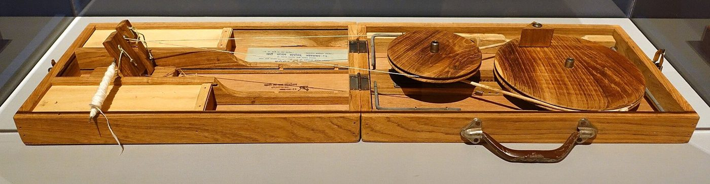

Chapter 14: Crafts in the Colonial Economy¶
Between the mid-eighteenth and the mid-twentieth centuries, the Indian craft economy was transformed. The East India Company, from a trading company, became the ruler of Bengal and then of most of India; British factory goods, above all cotton cloth, flooded Indian markets; and many artisan industries declined, while others adapted and some new ones grew. Nationalists from the late nineteenth century onwards made the ruin of Indian crafts a central charge against British rule, and the spinning wheel became the symbol of the freedom movement. This chapter examines what happened, how historians have measured and debated it, and how a famous myth, that of the muslin weavers’ severed thumbs, arose.
14.1 India in the Eighteenth-Century World Economy¶
In the seventeenth and eighteenth centuries, South Asia was one of the world’s largest producers of manufactured goods, and its cotton textiles were exported in great quantities to Southeast Asia, West Asia, East Africa and, through the European companies, to Europe, West Africa and the Americas (Chaudhuri 1978; Riello and Roy 2009). Two sets of estimates are often quoted to show the scale of this economy:
-
Angus Maddison estimated that India accounted for about a quarter of world GDP around 1700, falling to about 16 per cent in 1820 and under 5 per cent by 1950 (Maddison 2001). These figures largely reflect the size of India’s population; they do not measure productivity or living standards.
-
Paul Bairoch estimated that the Indian subcontinent produced roughly a quarter of the world’s manufactures in 1750, falling to under 2 per cent by 1900, while Britain’s share rose from about 2 per cent to nearly a fifth (Bairoch 1982); his figures are given in Table 14.1.
| Year | Indian subcontinent | United Kingdom | China |
|---|---|---|---|
| 1750 | 24.5 | 1.9 | 32.8 |
| 1800 | 19.7 | 4.3 | 33.3 |
| 1830 | 17.6 | 9.5 | 29.8 |
| 1860 | 8.6 | 19.9 | 19.7 |
| 1880 | 2.8 | 22.9 | 12.5 |
| 1900 | 1.7 | 18.5 | 6.2 |
Source: Bairoch (1982). The figures for the eighteenth and early nineteenth centuries are rough estimates, based largely on assumptions about population and per capita consumption of manufactures.
Both sets of figures are estimates, and economic historians use them with caution. They do show, however, that the relative position of Indian manufacturing changed dramatically in the nineteenth century, in part because Britain industrialised and in part because Indian handicraft industries declined.
14.2 The Company and the Weavers¶
14.2.1 From Trade to Rule¶
Until the mid-eighteenth century, the European companies bought Indian textiles in competition with Indian and other Asian merchants, through brokers who advanced money to weavers. After the battle of Plassey (1757) and the grant of the revenue administration (dīvānī) of Bengal in 1765, the English Company used its political power to secure cloth on its own terms. Its agents (gumāśtas) forced advances on weavers, bound them to deliver only to the Company, fixed low prices, and used peons to confine, fine and beat weavers who failed to deliver or tried to sell to others. Company regulations from the 1770s and 1780s gave legal backing to many of these practices (Hossain 1988). In south India, Prasannan Parthasarathi has shown how the Company’s new controls eroded the bargaining power that weavers had previously enjoyed (Parthasarathi 2001).
The great Bengal famine of 1769–70, which killed a large part of the population of the province in the first years of Company rule, fell heavily on weavers, spinners and other artisans, who depended on buying grain in the market. Famine and scarcity recurred throughout the colonial period, and artisans, who had no land to fall back on, were among the first to suffer.
These coercive practices were described at the time by critics of the Company, among them William Bolts, a former Company servant, whose Considerations on India Affairs (1772) is one of the most detailed contemporary accounts (Bolts 1772).
14.2.2 The Myth of the Severed Thumbs¶
A story widely repeated in India holds that the British cut off the thumbs of the muslin weavers of Dhaka to destroy their craft. The story is not supported by any documentary evidence. It appears to derive from a misreading of a passage in Bolts’s book, which describes the oppression of the winders of raw silk in Bengal (whom he calls “Nagaads”), and reports that some of them had cut off their own thumbs to escape being forced to wind silk for the Company (Bolts 1772). Over time, in nationalist writing and popular memory, this account of self-mutilation by silk-winders became a story of mutilation by the British of the weavers of Dhaka muslin.
The myth should be abandoned, not because the Company’s treatment of weavers was benign, but because the documented reality is serious enough. Weavers were coerced by advances, confined, fined and flogged; they lost the freedom to sell to the highest bidder; and their earnings fell (Hossain 1988; Parthasarathi 2001). The decline of the Dhaka muslin industry in the early nineteenth century had several causes: the loss of Mughal court patronage, the Company’s purchasing regime, British tariffs on Indian cloth, and above all the arrival of cheap machine-made cloth from Lancashire.
14.3 Tariffs and Machine-Made Cloth¶
By the late eighteenth century British manufacturers, having learned to print, dye and finally spin and weave cotton by machine, could compete with Indian cloth in Britain and in third markets. Indian cottons entering Britain had long faced heavy duties or prohibition. The historian H. H. Wilson, writing in the 1850s, remarked that in the early nineteenth century Indian cotton and silk goods could have been sold profitably in Britain at much lower prices than British goods, and that British manufactures had to be protected by duties of 70–80 per cent or by prohibition; Romesh Chunder Dutt, who quoted him, made the contrast between British protection at home and enforced free trade in India a central argument of his Economic History of India (1902) (Dutt 1902). British goods, by contrast, entered India at low duties after the end of the Company’s trading monopoly in 1813; the remaining cotton import duties were abolished in 1882, and when they were reimposed in the 1890s for revenue, an equivalent excise was levied on cloth from Indian mills.
Imports of British cotton cloth and yarn into India grew rapidly from the 1820s, and by the later nineteenth century Lancashire cloth dominated the market for ordinary cloth. Handloom weavers lost much of their market, especially for plain cloth; spinners, most of them women working at home, lost almost all of theirs as handloom weavers turned to cheap machine-spun yarn.
14.4 The Drain and the Weaver¶
Nationalist economists connected the fate of Indian crafts with a broader critique of colonial rule. Dadabhai Naoroji argued that a large part of India’s revenue was transferred to Britain each year, without equivalent return, in the form of the salaries and pensions of officials, interest on debt, the costs of the army and the profits of British firms: the “drain” of wealth from India (Naoroji 1901). Romesh Chunder Dutt added a detailed history of land revenue, famine and the decline of manufactures. In their view, the ruin of the weaver was one part of a system that impoverished India for Britain’s benefit (Dutt 1902). Later economic historians have debated the size of the drain and its effects, but the critique shaped Indian economic thought and policy for decades, including the protection of handlooms and village industries after independence.
14.5 The Deindustrialisation Debate¶
The nationalist case, set out in Naoroji’s Poverty and Un-British Rule in India (1901) and in Dutt’s histories, was that British rule had “deindustrialised” India, destroying its manufactures and forcing artisans back onto the land. Later historians have debated the extent and causes of this decline.
-
Amiya Kumar Bagchi, using the surveys of Francis Buchanan-Hamilton for Gangetic Bihar in the 1810s and the census of 1901, argued that the share of the population dependent on industry roughly halved over the nineteenth century, a clear case of deindustrialisation (Bagchi 1976).
-
Morris D. Morris and others questioned the reliability of such comparisons and argued that handloom weaving survived on a larger scale than nationalists assumed (Morris 1963).
-
Tirthankar Roy has shown that many “traditional” industries adapted rather than disappeared: handloom weavers specialised in products the mills could not make cheaply, such as saris with complex borders, used mill yarn, adopted improved looms, and in some regions expanded their output in the late nineteenth and early twentieth centuries (Roy 1993, 1999).
-
The Cambridge Economic History of India surveys the evidence for the period as a whole (Kumar 1983).
The picture that emerges is of severe and uneven decline. Cotton spinning by hand collapsed; plain cloth weaving lost much of its market; iron smelting, paper-making and many other crafts dwindled; luxury crafts lost their courtly patrons. At the same time some handicrafts adapted and some new industries, such as carpets for export, grew; and from the 1850s Indian entrepreneurs built cotton mills in Bombay and Ahmedabad, so that by the early twentieth century India had a substantial modern textile industry of its own. Artisans who could not adapt fell into poverty, and many joined the ranks of landless labourers.
14.6 Other Crafts under Colonial Rule¶
The fate of crafts other than cotton weaving varied.
- Iron and steel
- Village iron smelting declined steeply in the second half of the nineteenth century, as cheap imported iron and steel, carried by the railways, reached rural markets, and as forest laws restricted access to charcoal. Crucible steel production also ended. The first large modern steelworks in India, the Tata Iron and Steel Company at Jamshedpur, began production in 1911–12.
- Paper
- Hand-made paper was displaced by machine-made paper, both imported and, from the later nineteenth century, made in Indian mills.
- Shipbuilding
- Indian shipwrights built large ships for the East India Company and for Indian merchants at Bombay, Surat and on the Hughli in the late eighteenth and early nineteenth centuries; the Wadia master-builders of Bombay built ships for the Royal Navy (Wadia 1955). The coming of iron and steam ships in the mid-nineteenth century, and the preference for British yards, ended this industry.
- Luxury crafts
- The decline of Indian courts and aristocracies after the Company’s conquests deprived many craftsmen of patrons. At the same time, new markets appeared among Europeans in India and abroad, for whom craftsmen produced “art wares” adapted to European taste: carved furniture, ivory and metal souvenirs, embroidered goods and shawls.
- New industries
- Some crafts expanded: carpet-weaving for export, the Firozabad glass bangle industry, and the brass industry of Moradabad grew in the late nineteenth and early twentieth centuries, often using imported materials such as sheet brass and glass.
Tirthankar Roy’s study of several craft industries in the late colonial period, among them handloom weaving, silk, wool and leather, shows a pattern of change rather than simple decline: some branches of each industry collapsed, others adapted to new markets and new materials, labour relations became more commercial, and workshops employing wage labour grew at the expense of independent artisans (Roy 1999).
14.7 The Indian Cotton Mills¶
Indian entrepreneurs answered British competition by building their own mills. The first successful cotton-spinning mill in Bombay was founded by Cowasji Nanabhai Davar in 1854, and Ranchhodlal Chhotalal opened the first mill in Ahmedabad in 1861. By the early twentieth century Bombay and Ahmedabad were great textile cities, with mills owned largely by Parsi, Gujarati Hindu, Jain and Muslim entrepreneurs. Their workforce included many people from weaving and other artisan castes who had lost their livelihoods, as well as migrants from agricultural communities. The mills competed with the handloom weavers for the market in coarse cloth, but they also supplied the weavers with yarn. In Ahmedabad, a dispute between millworkers and owners in 1918, in which Gandhi intervened, led to the foundation of the Textile Labour Association, a union based on Gandhian principles of arbitration, in which Anasuya Sarabhai played a leading role. The history of Indian textiles thus continued into the industrial age, with many of the same communities.
14.8 The Princely States¶
Some princely states pursued their own policies towards crafts and industry. In Mysore, the state promoted sericulture and silk weaving, establishing a government silk-weaving factory in 1912, and the Mysore government’s industrial programme under the engineer-administrator M. Visvesvaraya (Dewan 1912–1918) included support for traditional as well as modern industries. Baroda under Sayajirao Gaekwad III (r. 1875–1939) founded the Kala Bhavan technical institute (1890), which taught both modern technology and the arts. Travancore, Hyderabad, Jaipur and other states maintained schools of art and crafts, museums and emporia. The princely states were not immune from the pressures of the colonial economy, but under some of them crafts and industry were deliberately fostered rather than left to decline.
14.9 Indigo and Cotton¶
Colonial rule also turned some craft materials into plantation and export crops. Indigo was grown in Bengal and Bihar under the control of European planters, who forced peasants to cultivate it on unfavourable terms. In 1859–60 the cultivators of Bengal rose in the “Indigo Revolt”; Dinabandhu Mitra’s play Nīl Darpaṇ (1860) dramatised their sufferings. In Champaran in Bihar, Gandhi’s first satyagraha in India (1917) was against the system that compelled tenants to grow indigo on part of their land. Synthetic indigo, marketed from 1897, ended the plantation industry in the following decades.
During the American Civil War (1861–65), when supplies of American raw cotton to Lancashire were cut off, cotton cultivation expanded rapidly in western India, and Bombay experienced a speculative boom that collapsed in 1865. Sven Beckert’s global history of cotton places the episode in a longer story, in which British and other states pressed India, Egypt and other regions to grow raw cotton for the mills of Europe while buying their cloth (Beckert 2014). India’s place in the world economy had been reversed: from the great exporter of cotton cloth it had become a supplier of raw cotton and a market for Lancashire.
14.10 Exhibitions, Art Schools and the Idea of “Indian Art Manufactures”¶
Paradoxically, the colonial state also became a collector and promoter of Indian crafts. Indian textiles, metalwork, jewellery and carvings were displayed at the Great Exhibition of 1851 in London and at many later exhibitions, and were acquired for the South Kensington Museum (later the Victoria and Albert Museum). George Birdwood’s The Industrial Arts of India (1880) praised Indian “art manufactures” as the products of a timeless village craftsman and deplored their corruption by European taste (Birdwood 1880). Schools of art were founded at Madras, Calcutta, Bombay and Lahore in the 1850s–1870s, partly to improve Indian design for the market; John Lockwood Kipling at Lahore and others collected and documented crafts. Abigail McGowan has shown how these colonial projects shaped the very idea of “Indian crafts” as a national heritage, an idea that nationalists then took up (McGowan 2009).
The Delhi Durbar of 1903, held to celebrate the accession of Edward VII, included a large exhibition of Indian art industries, organised by the economic botanist George Watt, whose catalogue surveyed the crafts of every province and lamented their decline under the influence of European taste and cheap imports (Watt 1903). From 1884 to 1917 the Journal of Indian Art, published in London, documented Indian crafts in illustrated articles, and provincial governments commissioned monographs on particular industries, such as cotton fabrics, silk, brass and copper ware, pottery, and wood-carving, in each province around 1900. These works, often written by district officers with the help of local informants, remain important sources, though they share the assumption that Indian crafts were static traditions in decline.
Ananda Coomaraswamy’s The Indian Craftsman (1909) drew on the British Arts and Crafts movement of William Morris and on his own studies of Ceylonese and Indian crafts to argue that the Indian craftsman, working within a guild and a religious tradition, embodied a way of life superior to industrial labour (Coomaraswamy 1909). His idealised picture paid little attention to caste hierarchy, but it gave Indian craft a philosophical dignity that strongly influenced later revivalists.
14.11 Svadeśī and Khādī¶
The Svadeśī movement in Bengal (1903–1908), launched in protest against Lord Curzon’s partition of the province in 1905, called for the boycott of British goods and the use of Indian ones. It encouraged handloom weaving and Indian enterprise, and its leaders included Surendranath Banerjea, Bipin Chandra Pal and Aurobindo Ghose in Bengal, and Bal Gangadhar Tilak and Lala Lajpat Rai elsewhere. Rabindranath Tagore composed songs for the movement and organised the tying of rākhīs as a symbol of unity on the day the partition took effect (Sarkar 1973).
Sumit Sarkar distinguished two strands in the movement: the boycott of foreign goods, and “constructive Svadeśī”, the effort to build Indian industries, crafts and institutions in their place (Sarkar 1973). Both touched the crafts directly. Manchester cloth was the main target of the boycott, and imports of British piece-goods into Bengal fell in the first years of the agitation. Volunteers picketed shops, and in some places women gave up imported glass bangles along with foreign cloth. Swadeshi stores opened in Calcutta and the district towns to sell Indian-made cloth, soap, matches, cutlery and other goods. Some of these, such as the store opened in Calcutta by Saraladevi Chaudhurani, sold goods made by women at home.
The movement raised the demand for Indian cloth, but its benefits were unevenly shared. Sarkar showed that much of the cloth sold as svadeśī came from the mills of Bombay and Ahmedabad, whose owners profited more from the boycott than Bengal’s handloom weavers did. Handloom weaving nonetheless revived in parts of Bengal, helped by the fly-shuttle (Section 4.4) and by weaving schools. New Bengali enterprises were also founded, among them the Banga Lakshmi Cotton Mills (1906). The National Council of Education and the Bengal Technical Institute, both founded in 1906 and merged in 1910, set out to train Indians in technology and the industrial crafts; together they were the forerunners of Jadavpur University. In the same years Abanindranath and Gaganendranath Tagore, with British admirers of Indian art, founded the Indian Society of Oriental Art (1907), which promoted an “Indian” art drawing on Mughal, Rajput and Ajanta painting and, later, on folk and craft traditions (Chapter 11).
The boycott also had a coercive side. Poor traders, many of them Muslim, who depended on selling cheap foreign cloth, were pressed or forced to give it up, and the burning of their goods caused bitterness. Rabindranath Tagore, who had at first composed songs for the movement, withdrew from it. In his novel Ghare Baire (The Home and the World, 1916) the forced burning of a poor trader’s foreign cloth is one of the episodes through which he criticised nationalist zeal (Volume 24). The arguments of the Svadeśī years about whether to boycott or to build, about mill and handloom, and about whom the movement served, were taken up again, on a much larger scale, in the Gandhian campaign for khādī.
M. K. Gandhi made hand-spinning and hand-woven cloth (khādī) the centre of the national movement from the early 1920s. In Hind Swaraj (1909) he had condemned machinery as a symbol of modern civilisation (Gandhi 1997); in practice he called for the boycott and burning of foreign cloth, spun daily himself, and founded the All India Spinners’ Association (1925) and the All India Village Industries Association (1934). For Gandhi, the spinning wheel offered rural people, especially women, supplementary income during the agricultural off-season, and it symbolised self-reliance and the dignity of manual labour. A spinning wheel was placed at the centre of the flag adopted by the Congress, and was replaced by the Aśokan wheel in the national flag of 1947. Khādī was, however, more expensive than mill cloth, and its economic impact was limited; its political and symbolic significance was immense. C. A. Bayly has shown how the politics of khādī drew on older Indian ideas about the moral and physical properties of cloth (Bayly 1986).
14.12 The Charkhā and the Making of Khādī¶
The khādī movement was a craft programme as well as a political one. To make cloth by hand on a national scale, the movement had to recover skills that had almost disappeared. It had to organise spinners, carders and weavers, improve their tools, fix prices and wages, and guarantee to buyers that the cloth was what it claimed to be. This section looks at that practical work. Gandhi’s economic and political thought, and the arguments of his critics, are treated in Volumes 19 and 24.
14.12.1 Recovering a Lost Skill¶
Gandhi recalled in his autobiography that when he praised the spinning wheel in Hind Swaraj in 1909, he had not yet seen one (Gandhi 1927). His ashram at Ahmedabad, founded in 1915, began by weaving on handlooms with mill-spun yarn, because neither a wheel nor a spinner could be found. In 1917 or soon after, Gangabehn Majmundar, a widow who had joined his work, found spinning wheels lying unused in the lofts of houses at Vijapur in the princely state of Baroda. She also found women there who were willing to spin again if someone supplied them with slivers (pūnī) of carded cotton and bought their yarn. At first the slivers came from a mill. Only later was a carder engaged, so that the whole process, from raw cotton to cloth, could be done by hand. Within a century, hand-spinning had declined so far in western India that a national movement had to search for it (Section 14.3); yet the skill had survived in the hands of older women, who taught it to the movement’s volunteers.
14.12.2 From Ashram to Organisation¶
During the Non-Cooperation Movement of 1920–22, khādī became the visible sign of commitment to the national cause. Foreign cloth was burned in public bonfires, and in September 1921, at Madurai, Gandhi gave up the shirt and cap for a loincloth and shawl. He explained that while khādī was scarce, those who could not obtain enough of it should make do with less. Congress office-holders were expected to wear khādī, and in 1924 the Congress briefly made the spinning of a monthly quota of yarn a condition of membership.
The All India Spinners’ Association (Akhil Bhāratīya Carkhā Saṅgh), founded in 1925, turned these commitments into an organisation. It bought cotton and distributed it to spinners, often as slivers, and paid for their yarn according to its count and evenness. It gave the yarn to weavers to be woven for a wage, and sold the cloth through its own shops (khādī bhaṇḍār) and at exhibitions held alongside the annual sessions of the Congress. It also certified producers and shops, so that buyers could trust that “khādī” was hand-spun as well as hand-woven, a guarantee that mill cloth sold under nationalist labels could not give. Lisa Trivedi has shown how the Association’s exhibitions, travelling displays, photographs and printed images created a shared visual language of the nation, in which the spinning wheel, the white cap and the hand-spun cloth stood for self-rule (Trivedi 2007). Some regions produced khādī of great fineness. At Ponduru in coastal Andhra, fine yarn is still spun from local cotton that, as in Dhaka, is cleaned with the jaw-bone of a fish (Section 4.7).
The economics were difficult. Spinning paid very little, and khādī cost more than mill cloth. In the mid-1930s Gandhi persuaded the Association to raise spinners’ wages towards a “living wage”, even though this raised prices and reduced sales. He also placed growing weight on self-sufficiency (svāvalambana): households and villages spinning for their own needs rather than for the market.
14.12.3 Improving the Wheel¶
The village spinning wheel had a single spindle driven by a cord from a large hand-turned wheel. The spinner turned the wheel with one hand and drew out the yarn with the other, and her output was small. The movement spent much effort on improving the tools. Maganlal Gandhi, a younger kinsman of Gandhi and the manager of the Sabarmati ashram until his death in 1928, worked on the wheel and on carding. In 1929 the Association offered a prize of one lakh rupees for a wheel that would allow a spinner to earn substantially more at home under stated conditions; it does not appear to have been awarded. Gandhi’s own contribution was the compact box wheel (peṭī carkhā; Figure 14.1), associated with his imprisonment at Yeravda in the early 1930s, which folded into a case small enough to carry on journeys. For schoolchildren and travellers the movement promoted the simple hand spindle (takalī), which became part of the curriculum of Gandhian basic education (Chapter 15).

,_India,_1920s_or_1930s_AD,_wood,_metal_-_Textile_Museum,_George_Washington_University_-_DSC09866.JPG){kind=link}
After independence the most important change was the multi-spindle Ambar charkhā. It was developed by E. Ekambaranathan of Tamil Nadu, whose name it carries, and adopted in the mid-1950s by the All India Khadi and Village Industries Board, the predecessor of the Commission. With four spindles and drafting rollers it greatly increased output. It needed evenly prepared slivers, which were made by machine, and this raised the question of how much machinery khādī could include while remaining khādī. Later models added more spindles. The debate, about where the line between hand and machine should be drawn, continues in handloom policy today (Section 15.2).
14.12.4 Meanings and Limits¶
Khādī had critics from the start. Rabindranath Tagore’s essay “The Cult of the Charka” (1925) questioned whether mechanical spinning could free the mind, and Gandhi replied in “The Poet and the Charkha” in Young India later that year (Bhattacharya 1997). Economists pointed to the low returns of hand-spinning, and B. R. Ambedkar rejected the idealisation of the village economy (Volume 19). Even among nationalists, wearing coarse, heavy khādī was a sacrifice. Emma Tarlo has shown how men and women negotiated it, and how khādī was refined over the following decades into finer and more varied cloths (Tarlo 1996). Its achievement was not economic. It brought very large numbers of people, many of them women, into the national movement through a daily act of making. It joined the politics of independence to the fate of the poorest craft workers, and it gave Indian handmade cloth a symbolic standing that it has kept. After independence khādī remained the customary dress of politicians. Until the Flag Code was amended at the end of 2021, the national flag itself had to be made of hand-spun, hand-woven khādī.
Modern Relevance: At Independence
At independence in 1947, millions of Indians still depended on handicrafts and handloom weaving, most of them in poverty. The new state created the All India Handicrafts Board (1952), the All India Handloom Board, and the Khadi and Village Industries Commission (1957), and reserved certain products for the handloom sector. The story of these institutions and of the craft revival they supported is taken up in the next chapter.
Further Reading¶
For the Company and the Bengal weavers, Hossain (1988); for south India, Parthasarathi (2001); for the global context, Parthasarathi (2011) and Riello (2013); for the deindustrialisation debate, Bagchi (1976) and Roy (1999); for the nationalist critique, Dutt (1902); for colonial and nationalist ideas of craft, McGowan (2009); for Svadeśī, Sarkar (1973); for the beginnings of khādī, Gandhi (1927); for khādī and the visual culture of the nation, Trivedi (2007).